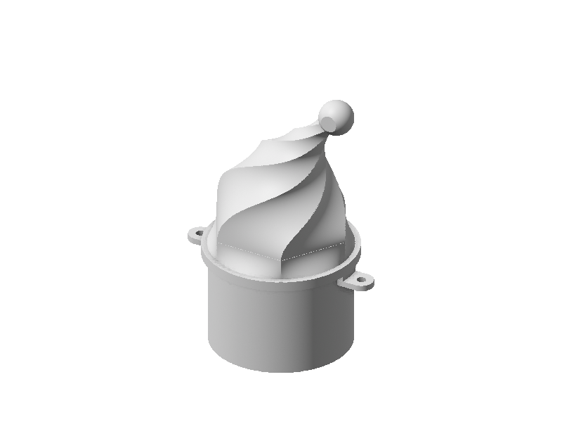
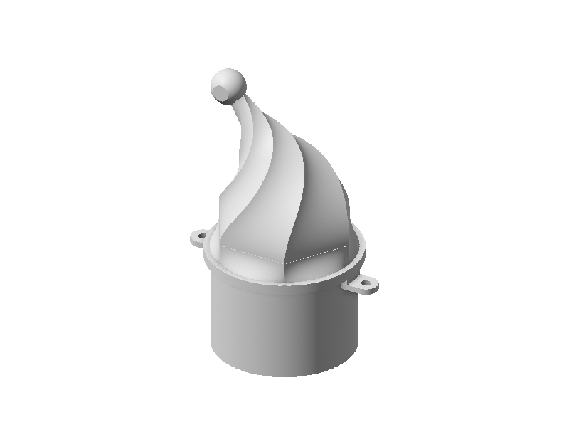

car_thing_v4
Drafted with AI, not yet reviewed
sdf-native lofts blended as fields, the swirl bent by bend()
Phone mount that replaces an air vent in a Mazda MX-5 and holds a magnetic ring with a ball joint: a base with ears that screws to a back cylinder, a short rise from circle to hexagon, then a swirl, a hexagon that shrinks and turns half a turn as it bends 45 degrees round a far pivot, to a ball. It prints in parts, split by PART.
Ported from src/mods/car_thing_v4.scad. Differences:
- The rise and the swirl are lofts whose slices blend as fields; the original pairs the points of its slices, so the rise’s in-between outlines differ slightly between the circle’s and the hexagon’s.
- The swirl is a loft built straight along Z, then bent round the pivot with bend(); the original turns 46 point layers into place.
- Circles are round: the original’s are 120-gons in a render.
- Compared with the original: within 0.036 mm.


Files
Source
// Phone mount that replaces an air vent in a Mazda MX-5 and holds a // magnetic ring with a ball joint: a base with ears that screws to a back // cylinder, a short rise from circle to hexagon, then a swirl, a hexagon // that shrinks and turns half a turn as it bends 45 degrees round a far // pivot, to a ball. It prints in parts, split by PART. // // Ported from src/mods/car_thing_v4.scad. Differences: // - The rise and the swirl are lofts whose slices blend as fields; the // original pairs the points of its slices, so the rise's in-between // outlines differ slightly between the circle's and the hexagon's. // - The swirl is a loft built straight along Z, then bent round the pivot // with bend(); the original turns 46 point layers into place. // - Circles are round: the original's are 120-gons in a render. // idiom sdf-native: lofts blended as fields, the swirl bent by bend() // --- Parameters --- const PART = "all"; // "all", "cylinder", "swirl-1", "swirl-2" or "aligner" const SCREW_LENGTH = 15.0; const SCREW_R = 1.5; const SCREW_CAP_LENGTH = 3.0; const SCREW_CAP_R = 2.5; const INSERT_LENGTH = 4.0; const INSERT_R = 2.35; const SCREWS = 12; const BASE_R = 37.75; const BASE_HEIGHT = 5.0; const EAR_OFFSET = 7.6; const EAR_THICKNESS = 3.0; const EAR_WIDTH = 12.0; const EAR_EXTENT = 99.5; const EAR_HOLE_R = 2.25; const BACK_R = 34.5; const BACK_HEIGHT = 51.2; const BACK_THICKNESS = 3.0; const ELEVATION_HEIGHT = 10.0; const BEND_R1 = 35.0; // the swirl's hexagon, at its start const BEND_R2 = 4.5; // and at its end const BEND_ANGLE = 45.0; const BEND_FACTOR = 2.5; // the pivot's distance, in BEND_R1 const BEND_TWIST = 180.0; const BALL_R = 8.5; const HOLE = 0.2; // the gap of a hole round its part // --- Body --- fn base() { cylinder(global::BASE_R, [-global::BASE_HEIGHT, 0]) } // The ears' outline: a slot across the base with a hole in each end, open // in the middle for the back. fn ear_profile() { let end = global::EAR_EXTENT / 2.0 - global::EAR_WIDTH / 2.0; let holes = circle(global::EAR_HOLE_R).move([end, 0]).symmetric_x(); stroke([[-end, 0], [end, 0]], global::EAR_WIDTH) .difference(union(circle(global::BACK_R - global::BACK_THICKNESS), holes)) } fn ears() { let o = global::EAR_OFFSET; union( ear_profile().extrude([-o - global::EAR_THICKNESS, -o]), ear_profile().intersection(circle(global::BASE_R)).extrude([-o, 0]), ) } fn back() { tube([global::BACK_R, global::BACK_R - global::BACK_THICKNESS], [-global::BACK_HEIGHT, 0]) } // The rise from the base, a circle that becomes the swirl's hexagon. fn elevation() { let r = global::BEND_R1; loft([0, global::ELEVATION_HEIGHT], |t| lerp(circle(r), regular_polygon(6, r), ease("out_sine", t))) } // The swirl, built straight along Z, the length of its arc, then bent // round the pivot: bend() bends round the Z axis, from +X towards +Y, so // the result is turned for the arc to rise from the elevation towards +X. // Its profile's X then runs away from the pivot, the original's towards // it, so the twist turns the other way. fn swirl() { let pivot = global::BEND_R1 * global::BEND_FACTOR; let r1 = global::BEND_R1; let r2 = global::BEND_R2; let twist = global::BEND_TWIST; loft([0, pivot * global::BEND_ANGLE * PI / 180.0], |t| #{ shape: regular_polygon(6, 1.0), scale: lerp(r1, r2, ease("in_out_sine", t)), angle: -twist * ease("in_sine", t), }) .bend(pivot, global::BEND_ANGLE) .rotate_x(90) .rotate_z(180) .move([pivot, 0, global::ELEVATION_HEIGHT]) } // `shape` moved to the ball's centre, a little past where the swirl ends. fn at_ball(shape) { let pivot = global::BEND_R1 * global::BEND_FACTOR; shape .move([-pivot, 0, global::BALL_R * 3.0 / 4.0]) .rotate_y(global::BEND_ANGLE) .move([pivot, 0, global::ELEVATION_HEIGHT]) } // The ball, flattened on its sides. fn ball() { let r = global::BALL_R; sphere(r).intersection(cuboid([r * 3.0, r * 7.0 / 4.0, r * 3.0])) } // --- Cutters --- // The screw and the heat insert that join the base to the back, the screw // from below; `t` grows the screw for its hole. fn joiner(t) { let cap = global::SCREW_CAP_LENGTH; let below = -global::BASE_HEIGHT; union( cylinder(global::SCREW_CAP_R + t, [below, below + cap + t]), cylinder(global::SCREW_R + t, [below, below + global::SCREW_LENGTH]), cylinder(global::INSERT_R, [0, global::INSERT_LENGTH]), ) } // A pin across the split between the swirl's halves, along Y: a cone each // way; `t` grows it for its hole. fn aligner(t) { let pin = cone([3 + t, 2 + t], [0, 5 + t]); pin.rotate_x(-90).symmetric_y() } // --- Assembly --- fn assembly() { union(base(), ears(), back(), elevation(), swirl(), at_ball(ball())) } fn assembly_holed() { let gap = global::HOLE; let joiners = joiner(gap).move([global::BASE_R * 2.0 / 3.0, 0, 0]).repeat_polar(global::SCREWS).rotate_z(15); let h = global::ELEVATION_HEIGHT; let aligners = union( aligner(gap).move([0, 0, h + 30]), aligner(gap).move([0, 0, h]), at_ball(aligner(gap)), ); assembly().difference(union(joiners, aligners)) } // Set by hand: the swirl's intervals spread as it twists and bends, so its // fitted bounds reach far past it. bounds([-51, -39, -52], [51, 39, 86]); switch PART { "all" => draw(assembly_holed()), "cylinder" => draw(assembly_holed().intersection(z)), "swirl-1" => draw(assembly_holed().intersection(max(-y, -z))), "swirl-2" => draw(assembly_holed().intersection(max(y, -z))), "aligner" => draw(aligner(0.0)), }